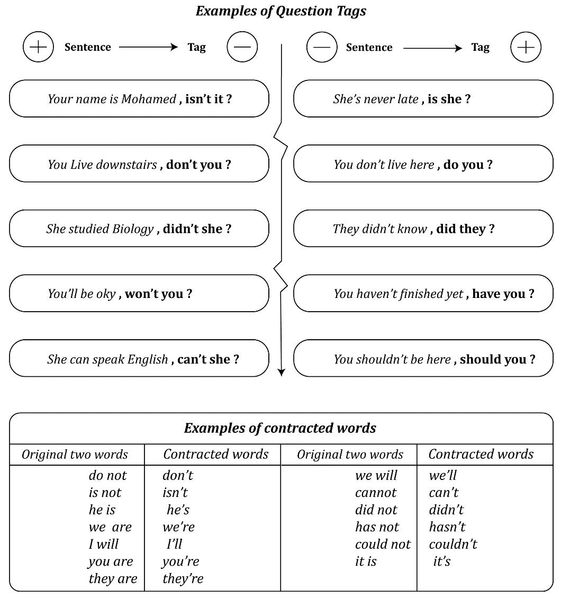

Question Tag
An Overview
Question tags are short questions at the end of statements.
They are mainly used in speech when we want to:
• Confirm that something is true or not
or
• To encourage a reply from the person we are speaking to
Question tags are formed with the auxiliary or modal verb from the statement and the appropriate subject
How it’s work : {Rules}
1 - We use a positive question tag with a negative sentence
2 - We use a negative question tag with a positive sentence
3 - We use contract = not (n’t) form always in question tag
4 - In the end we use question mark (?)
+ Question Tag with auxiliary and Model verbs :
TO BE , TO HAVE , TO DO , WILL , CAN , MUST , WOULD, SHOULD and COULD WHEN SEE ONE OF THOS THEN IT’S EAZY TO ANSWER :
Examples are below
+ Question Tag without auxiliary
{Rules}
- We check what the status of the verb
- If Present with without HE/SHE/IT WE USE: DO / DON’T
- If Present with HE/SHE/IT WE USE : DOES / DOESN’T
- If Past WE USE : DID / DIDN’T
Examples:
• You like fish, don’t you? -> (verb in present so we use do/don’t)
• He likes fish, doesn’t he? -> (verb in present with He so we use does/doesn’t)
• She liked fish, didn’t she? -> ( verb in past so we use did/didn’t)
• Attention
Nobody, Nothing and Never are negative statements so question tag should be positive
• Exceptions
- I am attractive, aren't I? -> (Notice : we could use am I not but isn’t good English so we use aren’t I)
- You will pass the BAC ?, won’t you? ->(Notice : we use won’t)
- Let's go to the beach, shall we ? -> (Notice : we use shall we)

When we are sure of the answer and we are simply encouraging a response, the intonation in the question tag goes down:
This is your car, isn't it?
(Your voice goes down when you say isn't it.)
When we are not sure and want to check information, the intonation in the question tag goes up:
He is from France, isn't he?
(Your voice goes up when you say isn't he.)